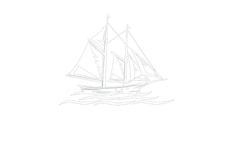
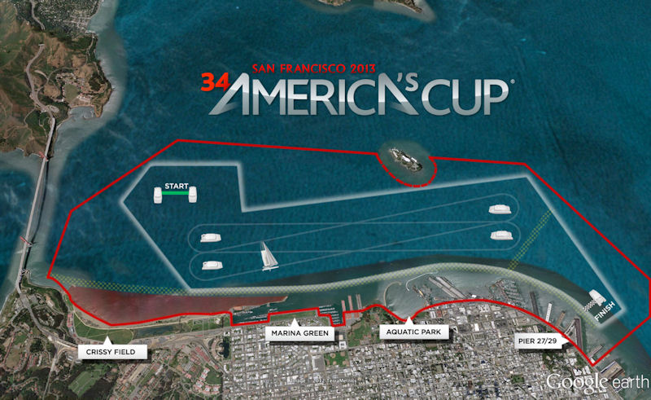
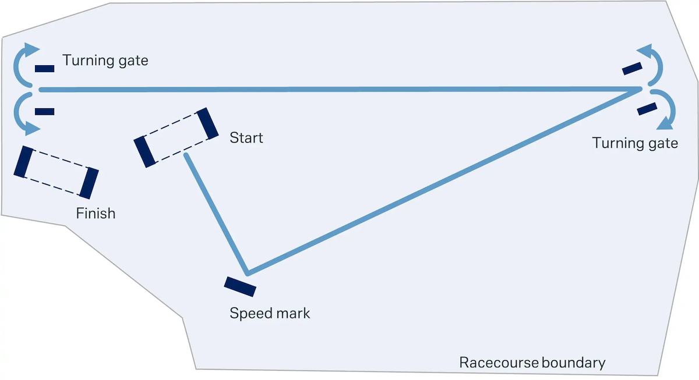
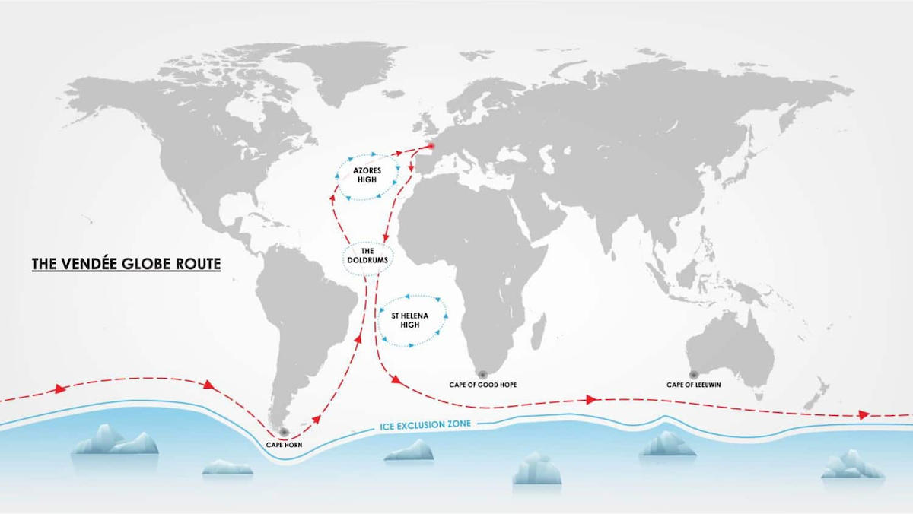

The America's Cup is the oldest international sporting trophy, first contested in 1851, and represents the pinnacle of competitive sailing and technological innovation. Teams from around the world compete in highly advanced, custom-built yachts—most recently the cutting-edge AC75 foiling monohulls that can lift above the water and reach incredible speeds. The event follows a challenger vs. defender format, where the winning team earns the right to host and defend the Cup in the next cycle. Beyond the racing itself, the Americas Cup drives major advancements in aerodynamics, materials science, and marine engineering, often influencing modern boat design. Combining elite athletic skill with groundbreaking technology, it remains one of the most prestigious and exciting events in the sailing world.
SailGP is a global sailing league featuring national teams competing in identical high-speed F50 foiling catamarans, capable of reaching speeds over 60 mph. Founded by Larry Ellison and Russell Coutts, the league is designed to bring sailing into a more spectator-friendly format with short, intense races held close to shore in iconic locations around the world. Because all teams race the same boats, the competition emphasizes crew skill, strategy, and teamwork rather than design advantages. SailGP also incorporates advanced data tracking and live broadcasting features, making it one of the most accessible and technologically driven sailing competitions today, blending elite performance with fast-paced, stadium-style racing.
The Vendée Globe is widely regarded as the toughest sailing race in the world—a solo, non-stop, unassisted circumnavigation of the globe. Held every four years, the race begins and ends in Les Sables-d'Olonne, with sailors navigating some of the most extreme conditions on Earth, including the Southern Ocean’s विशाल waves and relentless winds. Competitors sail high-tech IMOCA 60 yachts, many equipped with hydrofoils that allow them to reach remarkable speeds while enduring months alone at sea. The Vendée Globe demands extraordinary endurance, seamanship, and mental resilience, as sailors must handle navigation, repairs, weather strategy, and survival entirely on their own, making it one of the most grueling and respected challenges in all of sports.

The America’s Cup race course is usually a windward-leeward match-racing course, which means two boats start together and race mostly straight upwind and downwind between sets of marks rather than around a long triangle or distance course. After an intense pre-start, the boats cross the line and sail upwind to the top mark or top gate, then turn and race back downwind to a leeward gate, repeating that pattern for multiple legs while staying inside strict course boundaries. Because it is match racing, the goal is not just to sail the shortest path, but also to control your opponent by forcing them into bad air, covering their moves, and making better tactical decisions at mark roundings and boundary turns. Official America’s Cup course descriptions emphasize the upwind/downwind layout, gated marks, and boundary-limited racing area.

The SailGP Final is raced on the same compact, high-speed stadium-style course used for the event’s fleet races: a short course aligned with the wind, bounded to keep the boats close to shore, where the F50s blast from the start line to Mark 1 and then complete multiple upwind and downwind laps around gated marks before a final sprint to the finish. What makes the Final different is not a completely different shape, but the fact that only the top three teams compete in a winner-takes-all shootout, so the course becomes even more tactical, with every boundary turn, mark rounding, and crossing mattering because there are only three boats and no recovery points available afterward. SailGP’s official explainers emphasize that the racecourse is designed for short, intense racing, with course boundaries, multiple laps, and a layout that can be adjusted for local conditions while keeping the same overall format.

The Vendée Globe race course is completely different from the short, buoyed courses used in SailGP or the America’s Cup, because it is a solo, non-stop, non-assisted round-the-world route sailed in IMOCA monohulls. The skippers start in Les Sables-d’Olonne, France, sail south through the Atlantic, then continue eastward around Antarctica’s ocean belt by rounding the three great capes—the Cape of Good Hope, Cape Leeuwin, and Cape Horn—before heading back north across the Atlantic to finish where they started. Rather than following a tight stadium course marked by frequent turns, the Vendée Globe is a massive ocean circuit where sailors choose their own detailed routing based on weather, sea state, and ice limits, making the “course” as much a test of navigation, endurance, and survival as of boat speed. Official race materials describe it as roughly 45,000 km (about 24,300 nautical miles) around the globe, with the exact track shaped by race rules, exclusion zones, and each skipper’s strategic decisions.